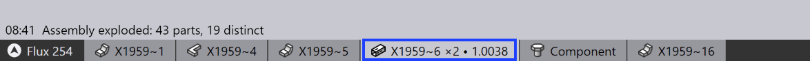
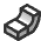
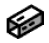
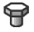

Importar ensamblaje
Un archivo de ensamblaje 3-D se puede importar haciendo clic en el icono Open en la barra de comandos.
Después de importar un archivo 3-D:
-
Seleccione el icono Workflow y haga clic en el símbolo para explotar el ensamblaje.
-
Alternativamente, use la tecla de acceso directo X para descomponer el ensamblaje en piezas individuales de plegado.
Después de explotar un ensamblaje, se muestra un mensaje indicando el número total de piezas encontradas en el ensamblaje junto con el recuento de piezas.
Cuando se selecciona una pieza, se muestra su cantidad.

El modelo 3-D se categoriza automáticamente después de la importación. Se usan diferentes símbolos y colores para representar estos modelos:
| Símbolo | Modelo | Significado |
|---|---|---|
Ensamblaje |
Representa una colección de múltiples piezas agrupadas juntas como un ensamblaje. |
|
Modelo de superficie |
Un modelo de superficie contiene un grupo de superficies conectadas entre sí. Algunos modelos de superficie se pueden analizar y convertir en modelos de metal. |
|
 |
Modelo de metal |
Representa modelos con capas y secciones de plegado, todos compartiendo el mismo espesor de chapa. Los modelos de metal se pueden desplegar en un patrón plano o usar como base para operaciones de plegado. |
Modelo láser |
Un modelo láser es una pieza plana sin pliegues, que requiere solo operaciones de corte por láser o punzonado. |
|
 |
Modelo de tubo |
Un modelo de tubo se genera a partir de una sección de tubo extruido, que puede incluir cortes finales, bordes y agujeros. |
 |
Componente |
Representa una pieza no metálica, como un tornillo, tuerca o arandela. Estos componentes se excluyen de los procesos de fabricación en TecZone Bend bend y se incluyen solo para generar la lista de materiales (BOM). |